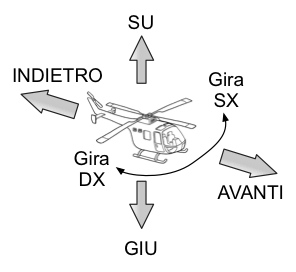

È possibile comandare il proprio elicottero utilizzando la tastiera oppure un gamepad con controlli analogici.
All'inizio del gioco viene presentato il menu principale dal quale è possibile iniziare una nuova partita, impostare le opzioni grafiche principali o terminare il processo. Per spostarsi tra le voci del menu, è necessario utilizzare le frecce direzionali della tastiera o del gamepad. Per selezionare una voce si prema INVIO oppure il tasto 1 del gamepad. Durante una partita, è possibile mettere il gioco in pausa e tornare al menu premendo ESC oppure il tasto BACK del gamepad.
Avviata
una nuova partita, ci si ritroverà con l'elicottero fermo nel punto
iniziale della mappa.
Per controllare l'elicottero si possono
utilizzare fino a 8 comandi (vedi figura):
SU: tenuto premuto, consente di aumentare la quota dell'elicottero oppure di avviarlo se questo è spento (atterrato). È mappato al tasto Q della tastiera, al numero 7 del tastierino numerico oppure al trigger sinistro (analogico) del gamepad.
GIU: tenuto premuto, diminuisce la quota dell'elicottero, se questo è in volo. Mappato al tasto E della tastiera, numero 9 del tastierino o al trigger destro (analogico) del gamepad. È possibile atterrare e spegnere l'elicottero avvicinandosi a un punto sufficientemente pianeggiante del terreno e diminuendo delicatamente la quota fino a toccare il suolo.
AVANTI: fa avanzare l'elicottero nella direzione corrente. Tasto W della tastiera, numero 8 del tastierino o stick sinistro del gamepad.
INDIETRO: fa retrocedere l'elicottero. Tasto S della tastiera, numero 2 del tastierino o stick sinistro del gamepad.
Gira SX, Gira DX: ruotano la fusoliera in senso antiorario o orario rispetto all'asse dell'elicottero. Indispensabili per regolare la propria direzione. Sono mappati rispettivamente ai tasti A/D della tastiera, allo stick sinistro del gamepad oppure ai numeri 4/6 del tastierino numerico.
Spostamento SX, Spostamento DX: consentono di spostarsi perpendicolarmente alla propria direzione. Sono mappati rispettivamente ai tasti 1/3 della tastiera, ai due tasti posteriori del gamepad o ai numeri 1/3 del tastierino.
La telecamera segue sempre gli spostamenti dell'elicottero, tuttavia è possibile orientare la visuale attorno all'elicottero per una visione più completa della scena. A tale scopo è necessario fare clic col mouse in un punto dello schermo e spostare il cursore mantenendo premuto il tasto sinistro. Alternativamente è possibile utilizzare lo stick destro del controller.
Per motivi di debug è stata prevista una modalità “free cam”, ovvero è possibile muoversi per la scena con una telecamera in prima persona. Per attivare e disattivare questa modalità è possibile premere il tasto C in qualsiasi momento del gioco. Una volta sbloccata, la telecamera è controllabile con quattro tasti direzionali (tasti I, J, K, L) e con il mouse. È possibile alzare/abbassare l'altezza della telecamera con i tasti U e O. Attenzione: la telecamera non effettua alcun controllo delle collisioni, pertanto è possibile oltrepassare (clipping) qualsiasi oggetto, incluso il terreno.
Scopo del gioco è raccogliere il
maggior numero possibile di casse. Una sola cassa può essere
presente sul terreno di gioco in un dato istante e l'utente può
raccoglierla “toccandola” con l'elicottero. Attenzione a non
urtare il terreno!
Raccolta una cassa, questa sparirà e
ricomparirà dopo qualche secondo in una posizione casuale della
mappa.
NB: se entro un certo quantitativo di tempo una cassa non
viene raccolta, questa sparirà e ne verrà generata un'altra.
Indipendentemente dalla visuale corrente, su schermo vengono
sempre mostrati degli indicatori per tenere traccia del punteggio
corrente (vale a dire quante casse sono state raccolte), della
quantità di carburante residuo e dei danni apportati all'elicottero.
Se uno di questi ultimi due indicatori scende a zero, la partita
verrà persa e si ritornerà al menu iniziale.
La minimappa in
basso a sinistra mostra sempre una porzione circolare dell'area di
gioco centrata sulla posizione corrente dell'elicottero. La mappa
quindi segue gli spostamenti del veicolo e mostra la posizione della
cassa mediante un punto nero lampeggiante.
Oltre ad essere un piacevole diversivo in un terreno del tutto
arido, le mongolfiere – se raccolte – aggiudicano un leggero
bonus allo stato dei danni dell'elicottero o alla sua riserva di
carburante. Per raccogliere una mongolfiera basta portarsi
sufficientemente vicini al loro cesto. Il tipo di bonus è
determinato in maniera casuale.
NB: le mongolfiere non sono
considerate un ostacolo, l'elicottero può attraversarle senza
conseguenze.